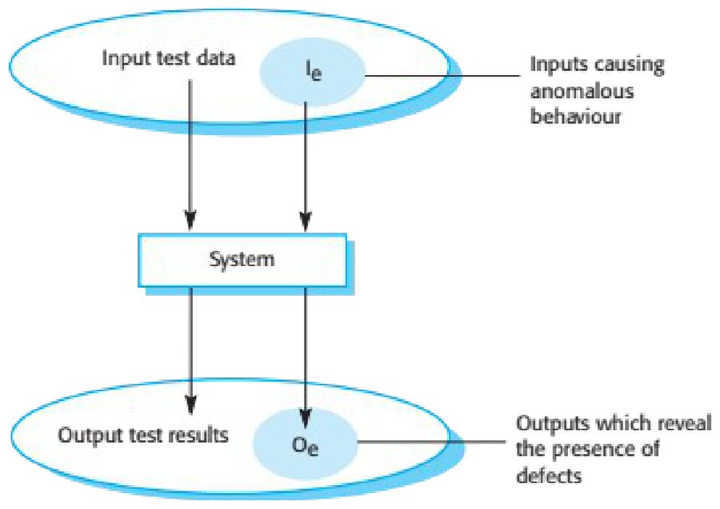
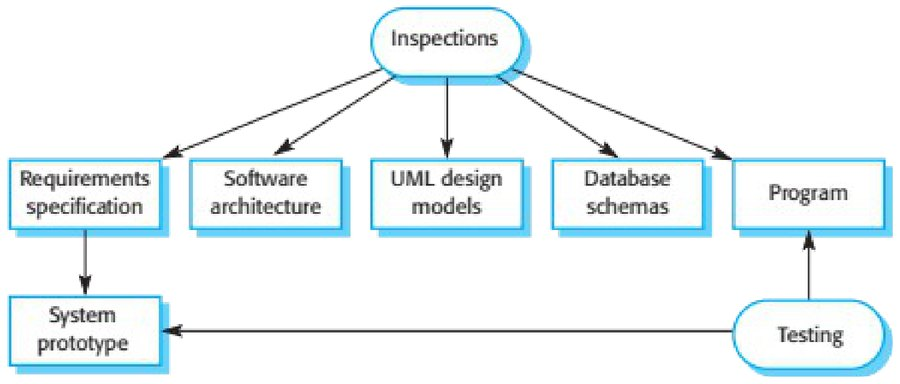
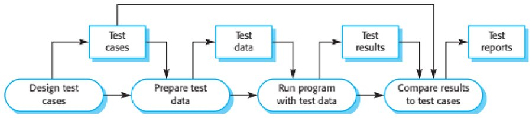
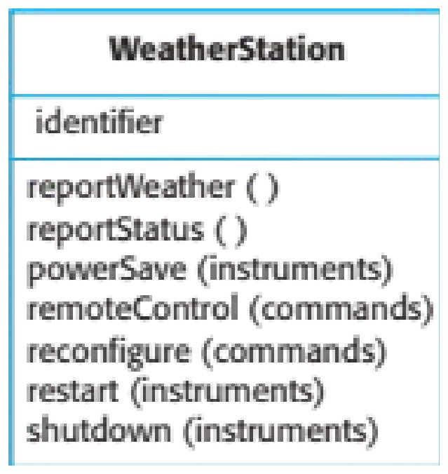
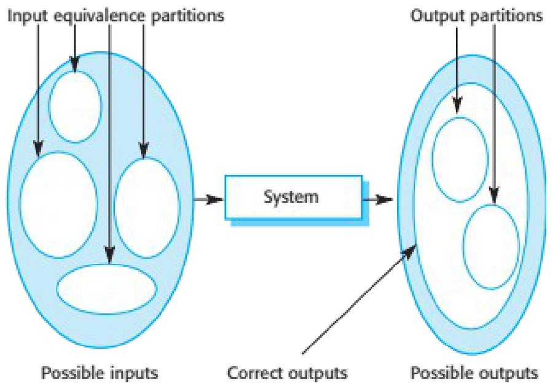
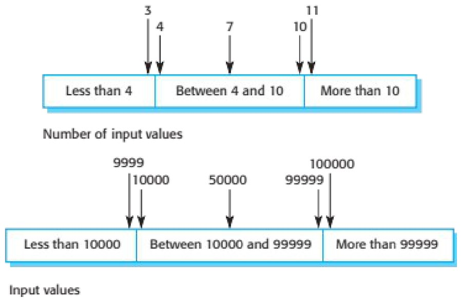
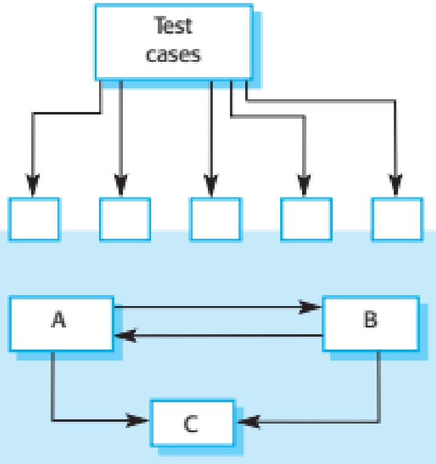
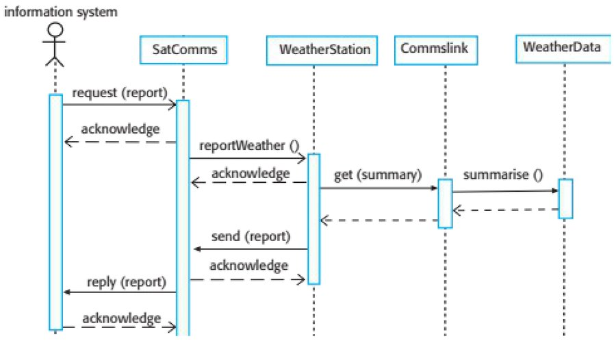
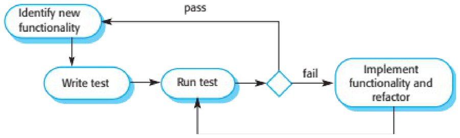
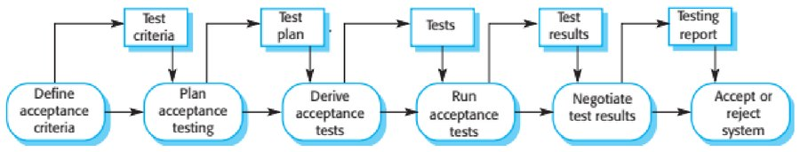

Chapter 8 · Software Testing and Code Coverage
Source review
The original source text and figures remain available. The slide pack is the textbook author’s published slide set for Chapter 8 (Sommerville, Software Engineering, 10th edition). The code-coverage part of the lecture extends source slide 47 with the course page on statement and branch coverage. Classroom activities are labelled separately.
Required selections
- Partition testing and testing guidelines: original slides 26–31
- Test-driven development and regression testing: original slides 43–48
Apply one named source concept to the chapter artifact and explain its effect. Finish any uncompleted core topic here; material does not become optional merely because it is reviewed after class.
Slide 1 · Chapter 8 – Software Testing
Chapter 8 – Software Testing
Slide 2 · Topics covered
Topics covered Development testing Test-driven development Release testing User testing
Slide 3 · Program testing
Program testing Testing is intended to show that a program does what it is intended to do and to discover program defects before it is put into use. When you test software, you execute a program using artificial data. You check the results of the test run for errors, anomalies or information about the program’s non-functional attributes. Can reveal the presence of errors NOT their absence. Testing is part of a more general verification and validation process, which also includes static validation techniques.
Slide 4 · Program testing goals
Program testing goals To demonstrate to the developer and the customer that the software meets its requirements. For custom software, this means that there should be at least one test for every requirement in the requirements document. For generic software products, it means that there should be tests for all of the system features, plus combinations of these features, that will be incorporated in the product release. To discover situations in which the behavior of the software is incorrect, undesirable or does not conform to its specification. Defect testing is concerned with rooting out undesirable system behavior such as system crashes, unwanted interactions with other systems, incorrect computations and data corruption.
Slide 5 · Validation and defect testing
Validation and defect testing The first goal leads to validation testing You expect the system to perform correctly using a given set of test cases that reflect the system’s expected use. The second goal leads to defect testing The test cases are designed to expose defects. The test cases in defect testing can be deliberately obscure and need not reflect how the system is normally used.
Slide 6 · Testing process goals
Testing process goals Validation testing To demonstrate to the developer and the system customer that the software meets its requirements A successful test shows that the system operates as intended. Defect testing To discover faults or defects in the software where its behaviour is incorrect or not in conformance with its specification A successful test is a test that makes the system perform incorrectly and so exposes a defect in the system.
Slide 7 · An input-output model of program testing
An input-output model of program testing

Slide 8 · Verification vs validation
Verification vs validation Verification: "Are we building the product right”. The software should conform to its specification. Validation: "Are we building the right product”. The software should do what the user really requires.
Slide 9 · V & V confidence
V & V confidence Aim of V & V is to establish confidence that the system is ‘fit for purpose’. Depends on system’s purpose, user expectations and marketing environment Software purpose The level of confidence depends on how critical the software is to an organisation. User expectations Users may have low expectations of certain kinds of software. Marketing environment Getting a product to market early may be more important than finding defects in the program.
Slide 10 · Inspections and testing
Inspections and testing Software inspections Concerned with analysis of the static system representation to discover problems (static verification) May be supplement by tool-based document and code analysis. Discussed in Chapter 15. Software testing Concerned with exercising and observing product behaviour (dynamic verification) The system is executed with test data and its operational behaviour is observed.
Slide 11 · Inspections and testing
Inspections and testing

Slide 12 · Software inspections
Software inspections These involve people examining the source representation with the aim of discovering anomalies and defects. Inspections not require execution of a system so may be used before implementation. They may be applied to any representation of the system (requirements, design,configuration data, test data, etc.). They have been shown to be an effective technique for discovering program errors.
Slide 13 · Advantages of inspections
Advantages of inspections During testing, errors can mask (hide) other errors. Because inspection is a static process, you don’t have to be concerned with interactions between errors. Incomplete versions of a system can be inspected without additional costs. If a program is incomplete, then you need to develop specialized test harnesses to test the parts that are available. As well as searching for program defects, an inspection can also consider broader quality attributes of a program, such as compliance with standards, portability and maintainability.
Slide 14 · Inspections and testing
Inspections and testing Inspections and testing are complementary and not opposing verification techniques. Both should be used during the V & V process. Inspections can check conformance with a specification but not conformance with the customer’s real requirements. Inspections cannot check non-functional characteristics such as performance, usability, etc.
Slide 15 · A model of the software testing process
A model of the software testing process

Slide 16 · Stages of testing
Stages of testing Development testing, where the system is tested during development to discover bugs and defects. Release testing, where a separate testing team test a complete version of the system before it is released to users. User testing, where users or potential users of a system test the system in their own environment.
Slide 17 · Development testing
Development testing
Slide 18 · Development testing
Development testing Development testing includes all testing activities that are carried out by the team developing the system. Unit testing, where individual program units or object classes are tested. Unit testing should focus on testing the functionality of objects or methods. Component testing, where several individual units are integrated to create composite components. Component testing should focus on testing component interfaces. System testing, where some or all of the components in a system are integrated and the system is tested as a whole. System testing should focus on testing component interactions.
Slide 19 · Unit testing
Unit testing Unit testing is the process of testing individual components in isolation. It is a defect testing process. Units may be: Individual functions or methods within an object Object classes with several attributes and methods Composite components with defined interfaces used to access their functionality.
Slide 20 · Object class testing
Object class testing Complete test coverage of a class involves Testing all operations associated with an object Setting and interrogating all object attributes Exercising the object in all possible states. Inheritance makes it more difficult to design object class tests as the information to be tested is not localised.
Slide 21 · The weather station object interface
The weather station object interface

Slide 22 · Weather station testing
Weather station testing Need to define test cases for reportWeather, calibrate, test, startup and shutdown. Using a state model, identify sequences of state transitions to be tested and the event sequences to cause these transitions For example: Shutdown -> Running-> Shutdown Configuring-> Running-> Testing -> Transmitting -> Running Running-> Collecting-> Running-> Summarizing -> Transmitting -> Running
Slide 23 · Automated testing
Automated testing Whenever possible, unit testing should be automated so that tests are run and checked without manual intervention. In automated unit testing, you make use of a test automation framework (such as JUnit) to write and run your program tests. Unit testing frameworks provide generic test classes that you extend to create specific test cases. They can then run all of the tests that you have implemented and report, often through some GUI, on the success of otherwise of the tests.
Slide 24 · Automated test components
Automated test components A setup part, where you initialize the system with the test case, namely the inputs and expected outputs. A call part, where you call the object or method to be tested. An assertion part where you compare the result of the call with the expected result. If the assertion evaluates to true, the test has been successful if false, then it has failed.
Slide 25 · Choosing unit test cases
Choosing unit test cases The test cases should show that, when used as expected, the component that you are testing does what it is supposed to do. If there are defects in the component, these should be revealed by test cases. This leads to 2 types of unit test case: The first of these should reflect normal operation of a program and should show that the component works as expected. The other kind of test case should be based on testing experience of where common problems arise. It should use abnormal inputs to check that these are properly processed and do not crash the component.
Slide 26 · Testing strategies
Testing strategies Partition testing, where you identify groups of inputs that have common characteristics and should be processed in the same way. You should choose tests from within each of these groups. Guideline-based testing, where you use testing guidelines to choose test cases. These guidelines reflect previous experience of the kinds of errors that programmers often make when developing components.
Slide 27 · Partition testing
Partition testing Input data and output results often fall into different classes where all members of a class are related. Each of these classes is an equivalence partition or domain where the program behaves in an equivalent way for each class member. Test cases should be chosen from each partition.
Slide 28 · Equivalence partitioning
Equivalence partitioning

Slide 29 · Equivalence partitions
Equivalence partitions

Slide 30 · Testing guidelines (sequences)
Testing guidelines (sequences) Test software with sequences which have only a single value. Use sequences of different sizes in different tests. Derive tests so that the first, middle and last elements of the sequence are accessed. Test with sequences of zero length.
Slide 31 · General testing guidelines
General testing guidelines Choose inputs that force the system to generate all error messages Design inputs that cause input buffers to overflow Repeat the same input or series of inputs numerous times Force invalid outputs to be generated Force computation results to be too large or too small.
Slide 32 · Component testing
Component testing Software components are often composite components that are made up of several interacting objects. For example, in the weather station system, the reconfiguration component includes objects that deal with each aspect of the reconfiguration. You access the functionality of these objects through the defined component interface. Testing composite components should therefore focus on showing that the component interface behaves according to its specification. You can assume that unit tests on the individual objects within the component have been completed.
Slide 33 · Interface testing
Interface testing Objectives are to detect faults due to interface errors or invalid assumptions about interfaces. Interface types Parameter interfaces Data passed from one method or procedure to another. Shared memory interfaces Block of memory is shared between procedures or functions. Procedural interfaces Sub-system encapsulates a set of procedures to be called by other sub-systems. Message passing interfaces Sub-systems request services from other sub-systems
Slide 34 · Interface testing
Interface testing

Slide 35 · Interface errors
Interface errors Interface misuse A calling component calls another component and makes an error in its use of its interface e.g. parameters in the wrong order. Interface misunderstanding A calling component embeds assumptions about the behaviour of the called component which are incorrect. Timing errors The called and the calling component operate at different speeds and out-of-date information is accessed.
Slide 36 · Interface testing guidelines
Interface testing guidelines Design tests so that parameters to a called procedure are at the extreme ends of their ranges. Always test pointer parameters with null pointers. Design tests which cause the component to fail. Use stress testing in message passing systems. In shared memory systems, vary the order in which components are activated.
Slide 37 · System testing
System testing System testing during development involves integrating components to create a version of the system and then testing the integrated system. The focus in system testing is testing the interactions between components. System testing checks that components are compatible, interact correctly and transfer the right data at the right time across their interfaces. System testing tests the emergent behaviour of a system.
Slide 38 · System and component testing
System and component testing During system testing, reusable components that have been separately developed and off-the-shelf systems may be integrated with newly developed components. The complete system is then tested. Components developed by different team members or sub-teams may be integrated at this stage. System testing is a collective rather than an individual process. In some companies, system testing may involve a separate testing team with no involvement from designers and programmers.
Slide 39 · Use-case testing
Use-case testing The use-cases developed to identify system interactions can be used as a basis for system testing. Each use case usually involves several system components so testing the use case forces these interactions to occur. The sequence diagrams associated with the use case documents the components and interactions that are being tested.
Slide 40 · Collect weather data sequence chart
Collect weather data sequence chart

Slide 41 · Test cases derived from sequence diagram
Test cases derived from sequence diagram An input of a request for a report should have an associated acknowledgement. A report should ultimately be returned from the request. You should create summarized data that can be used to check that the report is correctly organized. An input request for a report to WeatherStation results in a summarized report being generated. Can be tested by creating raw data corresponding to the summary that you have prepared for the test of SatComms and checking that the WeatherStation object correctly produces this summary. This raw data is also used to test the WeatherData object.
Slide 42 · Testing policies
Testing policies Exhaustive system testing is impossible so testing policies which define the required system test coverage may be developed. Examples of testing policies: All system functions that are accessed through menus should be tested. Combinations of functions (e.g. text formatting) that are accessed through the same menu must be tested. Where user input is provided, all functions must be tested with both correct and incorrect input.
Slide 43 · Test-driven development
Test-driven development
Slide 44 · Test-driven development
Test-driven development Test-driven development (TDD) is an approach to program development in which you inter-leave testing and code development. Tests are written before code and ‘passing’ the tests is the critical driver of development. You develop code incrementally, along with a test for that increment. You don’t move on to the next increment until the code that you have developed passes its test. TDD was introduced as part of agile methods such as Extreme Programming. However, it can also be used in plan-driven development processes.
Slide 45 · Test-driven development
Test-driven development

Slide 46 · TDD process activities
TDD process activities Start by identifying the increment of functionality that is required. This should normally be small and implementable in a few lines of code. Write a test for this functionality and implement this as an automated test. Run the test, along with all other tests that have been implemented. Initially, you have not implemented the functionality so the new test will fail. Implement the functionality and re-run the test. Once all tests run successfully, you move on to implementing the next chunk of functionality.
Slide 47 · Benefits of test-driven development
Benefits of test-driven development Code coverage Every code segment that you write has at least one associated test so all code written has at least one test. Regression testing A regression test suite is developed incrementally as a program is developed. Simplified debugging When a test fails, it should be obvious where the problem lies. The newly written code needs to be checked and modified. System documentation The tests themselves are a form of documentation that describe what the code should be doing.
Slide 48 · Regression testing
Regression testing Regression testing is testing the system to check that changes have not ‘broken’ previously working code. In a manual testing process, regression testing is expensive but, with automated testing, it is simple and straightforward. All tests are rerun every time a change is made to the program. Tests must run ‘successfully’ before the change is committed.
Slide 49 · Release testing
Release testing
Slide 50 · Release testing
Release testing Release testing is the process of testing a particular release of a system that is intended for use outside of the development team. The primary goal of the release testing process is to convince the supplier of the system that it is good enough for use. Release testing, therefore, has to show that the system delivers its specified functionality, performance and dependability, and that it does not fail during normal use. Release testing is usually a black-box testing process where tests are only derived from the system specification.
Slide 51 · Release testing and system testing
Release testing and system testing Release testing is a form of system testing. Important differences: A separate team that has not been involved in the system development, should be responsible for release testing. System testing by the development team should focus on discovering bugs in the system (defect testing). The objective of release testing is to check that the system meets its requirements and is good enough for external use (validation testing).
Slide 52 · Requirements based testing
Requirements based testing Requirements-based testing involves examining each requirement and developing a test or tests for it. Mentcare system requirements: If a patient is known to be allergic to any particular medication, then prescription of that medication shall result in a warning message being issued to the system user. If a prescriber chooses to ignore an allergy warning, they shall provide a reason why this has been ignored.
Slide 53 · Requirements tests
Requirements tests Set up a patient record with no known allergies. Prescribe medication for allergies that are known to exist. Check that a warning message is not issued by the system. Set up a patient record with a known allergy. Prescribe the medication to that the patient is allergic to, and check that the warning is issued by the system. Set up a patient record in which allergies to two or more drugs are recorded. Prescribe both of these drugs separately and check that the correct warning for each drug is issued. Prescribe two drugs that the patient is allergic to. Check that two warnings are correctly issued. Prescribe a drug that issues a warning and overrule that warning. Check that the system requires the user to provide information explaining why the warning was overruled.
Slide 54 · A usage scenario for the Mentcare system
A usage scenario for the Mentcare system George is a nurse who specializes in mental healthcare. One of his responsibilities is to visit patients at home to check that their treatment is effective and that they are not suffering from medication side effects. On a day for home visits, George logs into the Mentcare system and uses it to print his schedule of home visits for that day, along with summary information about the patients to be visited. He requests that the records for these patients be downloaded to his laptop. He is prompted for his key phrase to encrypt the records on the laptop. One of the patients that he visits is Jim, who is being treated with medication for depression. Jim feels that the medication is helping him but believes that it has the side effect of keeping him awake at night. George looks up Jim’s record and is prompted for his key phrase to decrypt the record. He checks the drug prescribed and queries its side effects. Sleeplessness is a known side effect so he notes the problem in Jim’s record and suggests that he visits the clinic to have his medication changed. Jim agrees so George enters a prompt to call him when he gets back to the clinic to make an appointment with a physician. George ends the consultation and the system re-encrypts Jim’s record. After, finishing his consultations, George returns to the clinic and uploads the records of patients visited to the database. The system generates a call list for George of those patients who He has to contact for follow-up information and make clinic appointments.
Slide 55 · Features tested by scenario
Features tested by scenario Authentication by logging on to the system. Downloading and uploading of specified patient records to a laptop. Home visit scheduling. Encryption and decryption of patient records on a mobile device. Record retrieval and modification. Links with the drugs database that maintains side-effect information. The system for call prompting.
Slide 56 · Performance testing
Performance testing Part of release testing may involve testing the emergent properties of a system, such as performance and reliability. Tests should reflect the profile of use of the system. Performance tests usually involve planning a series of tests where the load is steadily increased until the system performance becomes unacceptable. Stress testing is a form of performance testing where the system is deliberately overloaded to test its failure behaviour.
Slide 57 · User testing
User testing
Slide 58 · User testing
User testing User or customer testing is a stage in the testing process in which users or customers provide input and advice on system testing. User testing is essential, even when comprehensive system and release testing have been carried out. The reason for this is that influences from the user’s working environment have a major effect on the reliability, performance, usability and robustness of a system. These cannot be replicated in a testing environment.
Slide 59 · Types of user testing
Types of user testing Alpha testing Users of the software work with the development team to test the software at the developer’s site. Beta testing A release of the software is made available to users to allow them to experiment and to raise problems that they discover with the system developers. Acceptance testing Customers test a system to decide whether or not it is ready to be accepted from the system developers and deployed in the customer environment. Primarily for custom systems.
Slide 60 · The acceptance testing process
The acceptance testing process

Slide 61 · Stages in the acceptance testing process
Stages in the acceptance testing process Define acceptance criteria Plan acceptance testing Derive acceptance tests Run acceptance tests Negotiate test results Reject/accept system
Slide 62 · Agile methods and acceptance testing
Agile methods and acceptance testing In agile methods, the user/customer is part of the development team and is responsible for making decisions on the acceptability of the system. Tests are defined by the user/customer and are integrated with other tests in that they are run automatically when changes are made. There is no separate acceptance testing process. Main problem here is whether or not the embedded user is ‘typical’ and can represent the interests of all system stakeholders.
Slide 63 · Key points
Key points Testing can only show the presence of errors in a program. It cannot demonstrate that there are no remaining faults. Development testing is the responsibility of the software development team. A separate team should be responsible for testing a system before it is released to customers. Development testing includes unit testing, in which you test individual objects and methods component testing in which you test related groups of objects and system testing, in which you test partial or complete systems.
Slide 64 · Key points
Key points When testing software, you should try to ‘break’ the software by using experience and guidelines to choose types of test case that have been effective in discovering defects in other systems. Wherever possible, you should write automated tests. The tests are embedded in a program that can be run every time a change is made to a system. Test-first development is an approach to development where tests are written before the code to be tested. Scenario testing involves inventing a typical usage scenario and using this to derive test cases. Acceptance testing is a user testing process where the aim is to decide if the software is good enough to be deployed and used in its operational environment.